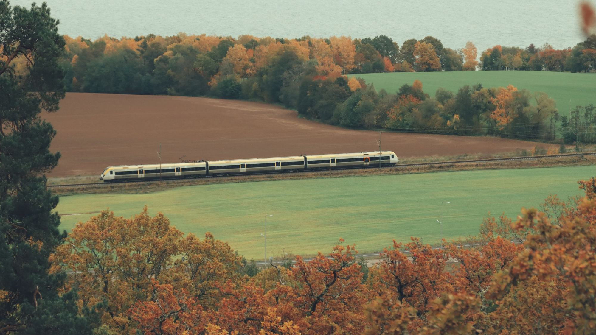
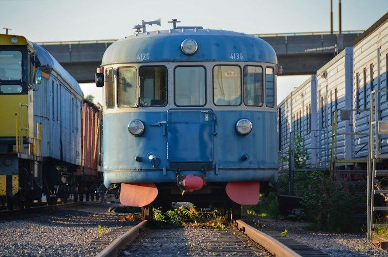

Ändstation
Göteborg C
Mitt i centrala Göteborg, vid Drottningtorget och Nordstan.
Härifrån når du
- Spårvagn och buss ut i hela staden
- Regionaltåg vidare i Västsverige
- Stora delar av centrum till fots

Sträckan och stationerna
Fem stationer mellan Göteborg och Stockholm, genom Västergötland och Närke.
Tåget går mellan Göteborg C och Stockholm C och stannar i Alingsås, Skövde C och Hallsberg. Alla fem finns att välja när du söker resa.
Från väst till öst. Tidtabellen publiceras när bokningen öppnar.
Ändstation
Mitt i centrala Göteborg, vid Drottningtorget och Nordstan.
Härifrån når du
Nära centrum i Alingsås. Det är också här bolaget har sitt kontor.
Härifrån når du
Centralt i Skövde, mitt i Skaraborg.
Härifrån når du
En av landets stora järnvägsknutar, i Närke. Här möts flera linjer.
Härifrån når du
Ändstation
Mitt i centrala Stockholm, vid Vasagatan.
Härifrån når du

Inför trafikstarten
Trafikstarten är uppskjuten. Datumet meddelas innan bokningen öppnar, och då kommer också tidtabell och priser.
Biljetter och villkor